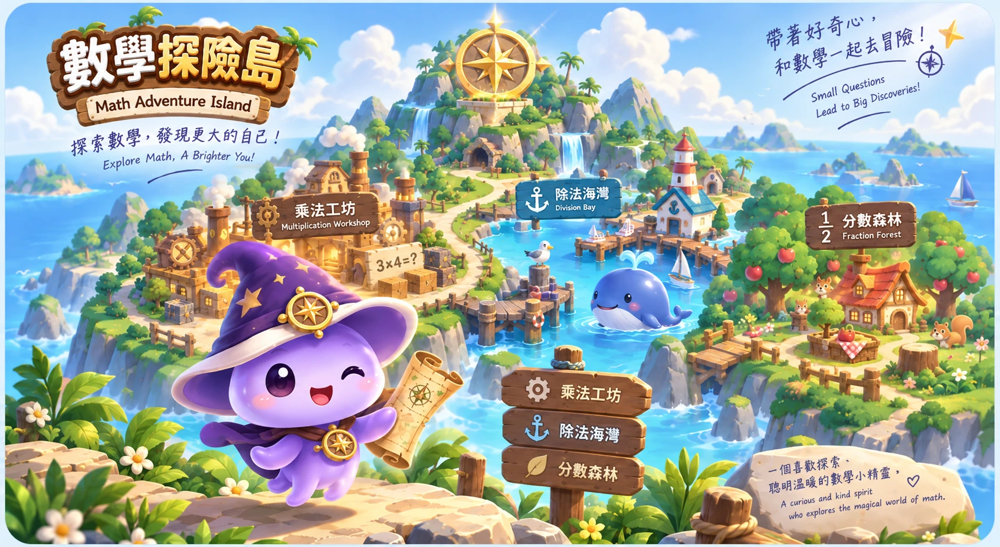
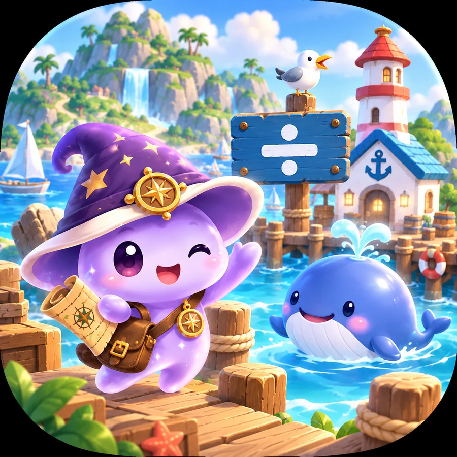
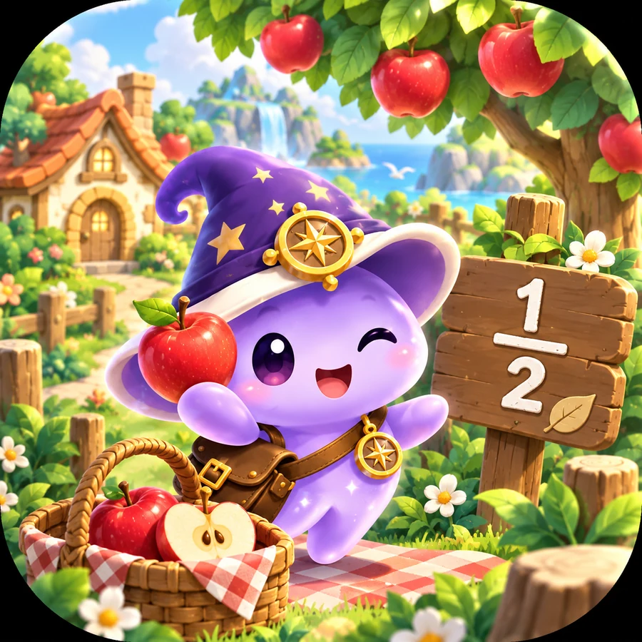

已開放🔧
乘法工坊
拆解、方格、直式動畫、位值軌道、關卡與正向鼓勵。工坊煙囪正冒著煙，等你來打造乘法技巧。

準備中🐳
除法海灣
可愛鯨魚守著海灣；未來將加入平均分配、包含除、餘數與直式除法。

準備中🍎
分數森林
從蘋果與野餐開始看懂「部分與整體」，未來加入等值分數、大小比較與分數運算。
🧭 世界觀：大島中央的羅盤代表「探索、方向、成長」，小路把每個數學區域串在一起；同一隻紫色魔法探險精靈會陪孩子走進不同主題。
📲 把數學探險島裝到你的裝置
不安裝也能直接用瀏覽器玩；安裝後會更像 App，啟動更方便，而且可使用已快取的離線內容。
1用 Safari 開啟在 iPhone / iPad 用 Safari 開啟目前的
/math/ 網址。2點「分享」點 Safari 工具列的分享按鈕（方框向上箭頭）。
3選「加入主畫面」在分享選單中向下滑，選擇「加入主畫面」。
4點「加入」名稱可保留「數學探險島」，完成後可從主畫面直接啟動。
建議從 /math/ 平台首頁 安裝，而不是從乘法子頁單獨建立捷徑。
1用 Chrome 開啟在 Android 手機或平板用 Chrome 開啟
/math/。2開啟 Chrome 選單點右上角「⋮」選單。
3安裝應用程式選擇「安裝應用程式」；部分版本可能顯示「加到主畫面」。
4確認安裝完成後，數學探險島會出現在應用程式清單或主畫面。
不同 Android / Chrome 版本文字可能略有差異；看到「安裝」或「加到主畫面」即可。
1Windows建議用 Microsoft Edge 開啟
/math/。2Edge 安裝點網址列安裝圖示，或從「⋯ → 應用程式」安裝此網站為應用程式。
3ChromeWindows / macOS 也可用 Chrome，從選單尋找「安裝應用程式」或安裝圖示。
4macOS可用 Chrome 安裝；Safari 也可將網站加入 Dock（實際名稱依 macOS 版本而異）。
電腦不一定要安裝，直接用瀏覽器也能完整使用；安裝後主要優點是獨立視窗、開始功能表 / Dock 啟動更方便。